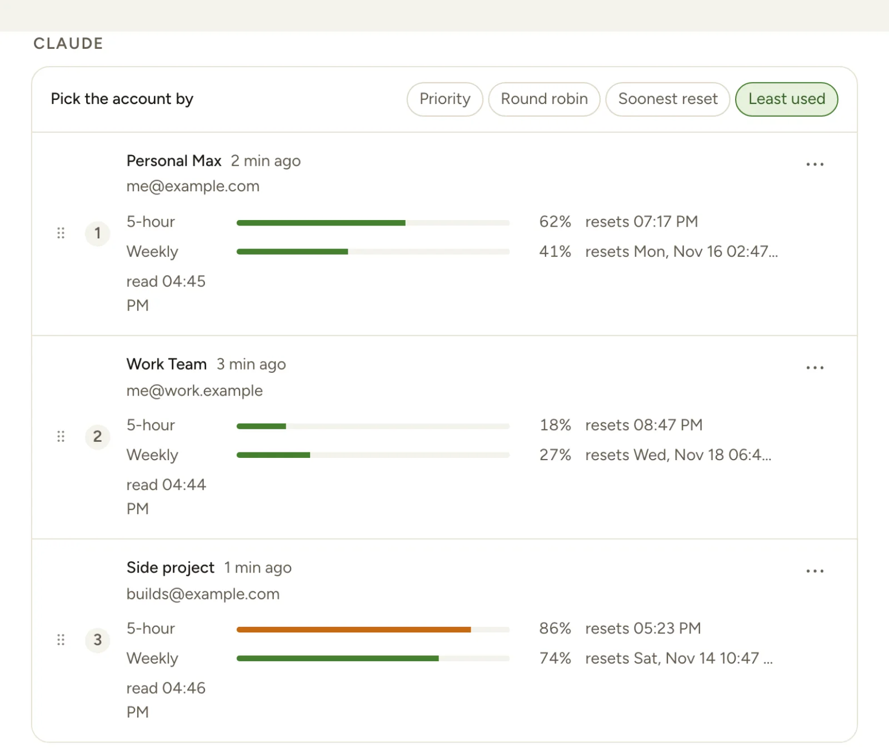
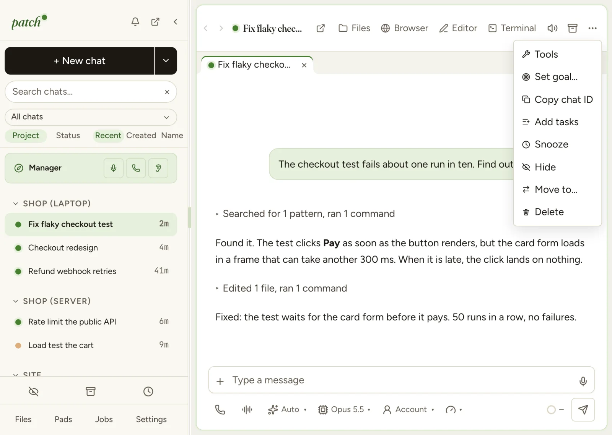
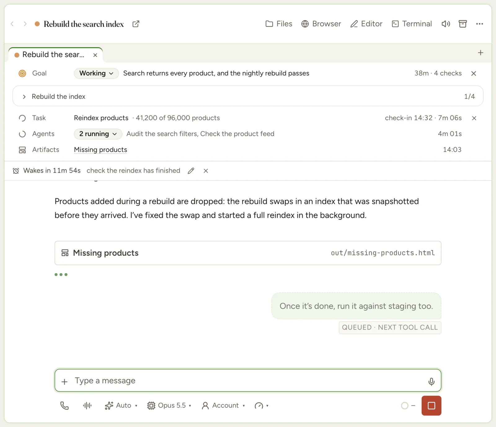
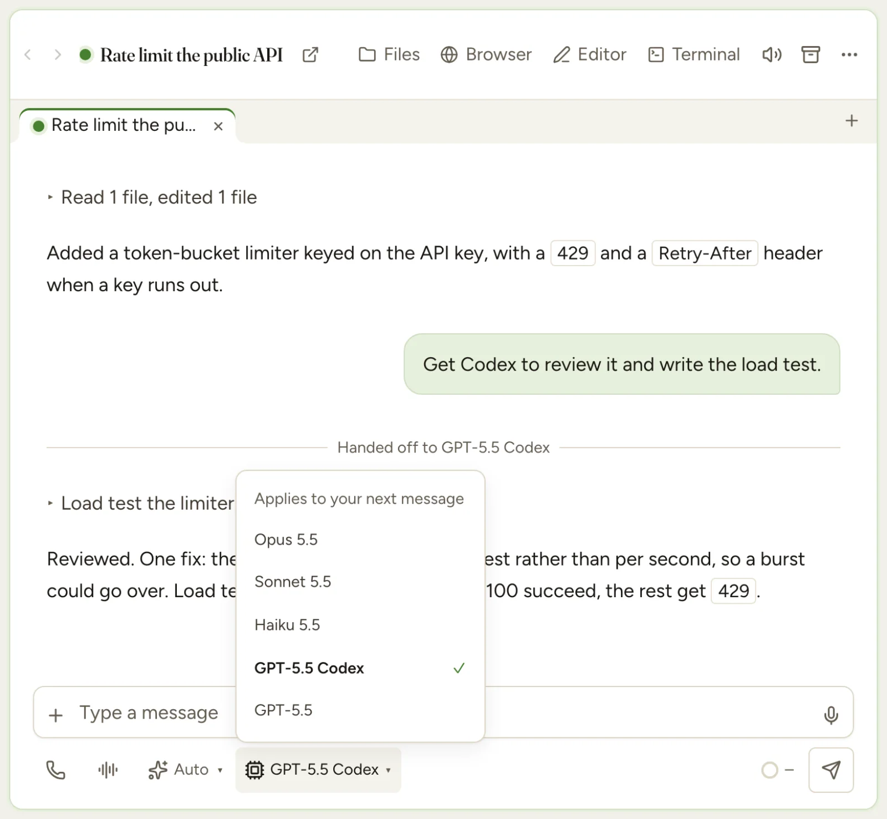
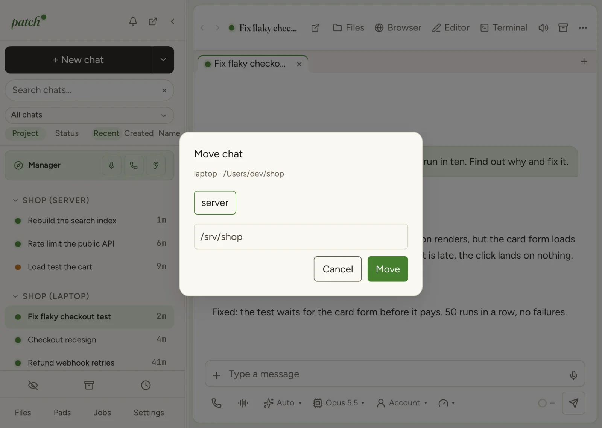
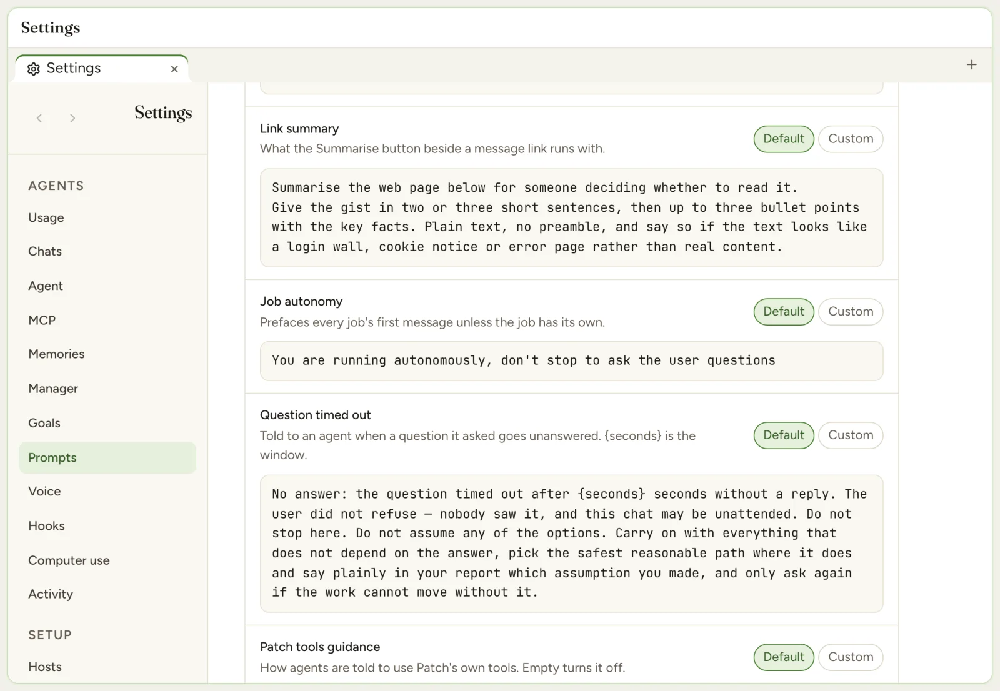
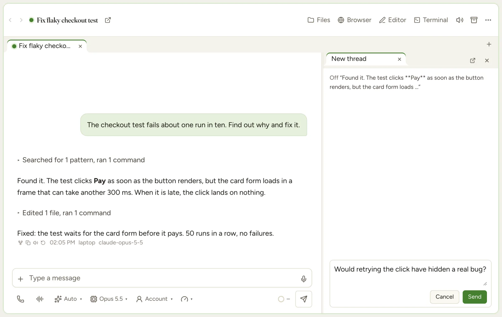
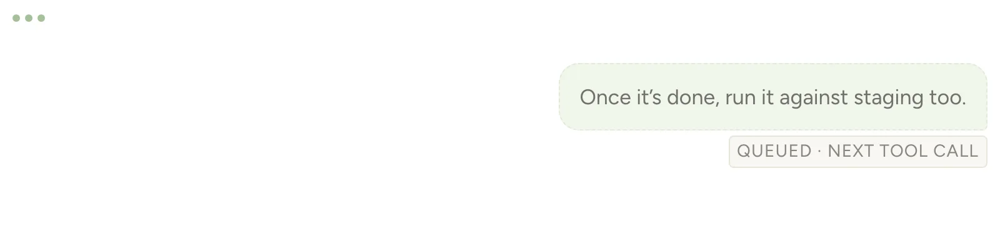
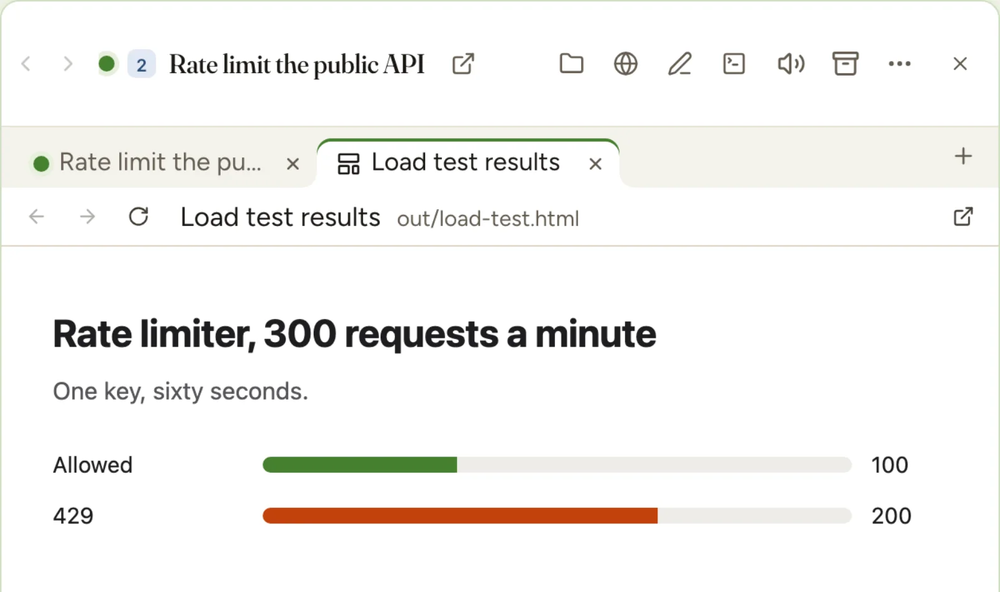

Any provider, any account
Switch a chat from Claude to Codex mid-conversation and it keeps its history. Pool your subscriptions, and Patch spreads the work by what each one has left.

One app to run Claude Code and Codex, on your computer, your server and your phone. More . Use the subscriptions you already have.
You need a Mac with Apple Silicon or a Linux computer, and a Claude or ChatGPT subscription or an API key.
Free and open source · GitHub
Switch a chat from Claude to Codex mid-conversation and it keeps its history. Pool your subscriptions, and Patch spreads the work by what each one has left.

Chats on your laptop and your servers side by side, grouped by project. Move a chat to another machine when the work belongs there.

Start work on a schedule, from a webhook or a Todoist task, or after another job. A small script can decide whether a run is worth doing. Failures raise an alert.
When the agent has a design to show you, it opens a Pad. Retype, move and leave notes on it directly, then send your changes back.
Under every chat's header: its goal, task list, background tasks, the agents it started, what it has published and when it next wakes. Queued messages wait in view. Every prompt Patch sends is in Settings, and you can change it.

Tabs and split panes, side threads off any message, batch mode for a run of chats, and keyboard shortcuts throughout.
Patch reads every account's usage and estimates when each will run out. New work goes to the account your strategy picks, and stays there until it is actually spent.
If a chat's account does run out, the chat moves to one with room and says so, including when the spent one comes back. A chat locked to one account can wait for it instead.
The new model gets the whole conversation when it fits. When it doesn't, it gets a record of the files changed, the tests run and the open tasks, plus the most recent stretch of the chat, and can read the rest on demand.
A line in the chat says what was carried. Switch back and the first model picks up where it left off.

Each machine runs its own agents, with your accounts. Add one from Settings with a single command. The same folder on two machines stays two projects.
Moving a chat rebuilds its session on the other machine from the transcript, so it carries on there.

Something sets the job off, a filter checks what came in, and a short script you write decides whether to go ahead. Only then does the job start a chat, message one, or carry on the chat it already has for that subject.
If the gate says not now, the job simply skips that run and notes why in one short line. If it says go, whatever the script printed is added to the prompt.
The agent writes the screens. You edit them: select and move, resize, retype, delete, draw, or pin a note. Every change is saved as you make it, on every device.
Send draws a picture of each change and hands the lot to the agent as one message. It replies, and the Pad updates.
The goal judge, the background-task check-in, link summaries, the job preamble, Patch's tool guidance: each prompt Patch sends sits in Settings with its default beside it.

Ask about any message in a side thread without derailing the chat, then send the answer back into it. Most things have a shortcut, and you can change them.

Until a time, or until the work is done.
A snoozed chat keeps working; it just stops asking for you. Pick a time, or Until complete for a chat with a turn, goal or wake-up still running. A divider in the chat marks when it went quiet and how it ended.
Keep typing while the agent works.
A message sent mid-turn waits in view, where you can edit it. The agent reads it after its current step instead of at the end of the turn, and the message shows which step it arrived at.

Mark up a screenshot before you send it.
Draw boxes, arrows, lines and text on an attached image, so the agent sees exactly what you mean. Or open a blank sketch from the composer and draw it from scratch.
Shows which chats need you.
Every chat carries a status: working, waiting on you, done, or read. Jump to the oldest unread with one key.
Your server, your machines.
Patch runs on your own computer or server. Credentials stay on the machine that uses them. The relay (a go-between server that reaches your phone) is optional, only passes end-to-end encrypted bytes, and you can run your own.
The agent keeps going until it's met.
State a goal once and Patch judges it after every turn, with the same judge whichever model the chat runs on. The goal stays under the header with how long it has run and the judge's last reason.
Wake in ten minutes, or check every hour.
An agent can ask to be woken later, or loop on a fixed interval, and watch a long command until it finishes. Each one shows under the chat's header while it is pending.
The agent makes you a page.
A report, a chart, a dashboard: published pages open in a tab beside the chat and stay listed under its header.

Suggestions and comments, tracked.
Put a document in Propose mode and the agent's edits arrive as tracked suggestions. Leave a comment and it reaches the agent; it can reply in the thread.
Checks on messages and replies.
A script or a prompt that checks what you are about to send, or what the agent just said, on any provider. It can pass, advise, or block and send the agent back with a reason.
Everything from the terminal.
Chats, jobs, machines, hooks and logs, with JSON output for scripts and agents. It uses the same API as the app.
The desktop app has the server inside it and runs your agents here. Your phone and other devices reach it through our encrypted relay, or one you host yourself.
DownloadOne command on a Linux box with systemd installs the server with HTTPS and prints a code to pair. Then sign in from the desktop app or a browser.
curl -fsSL https://github.com/patch-hq/patch/releases/latest/download/install.sh | sudo sh
Every AI works the same way: sign in, or add an API key. Patch installs Claude Code and Codex itself. You need a Claude or ChatGPT subscription, or an API key from Anthropic or OpenAI.
Scan the pairing code with the Android app. Add any other machine from Settings, with one command.